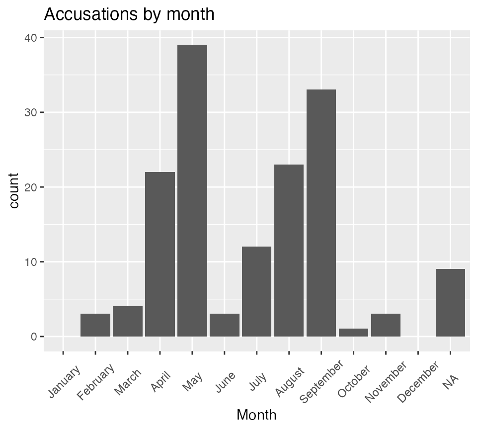
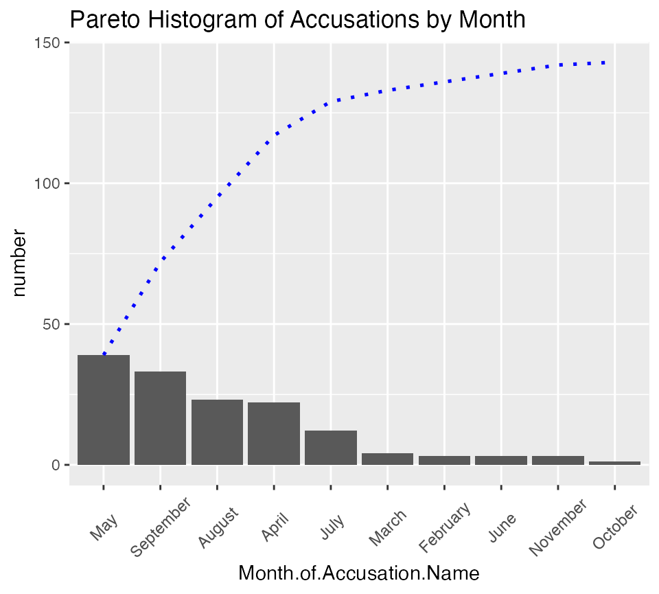
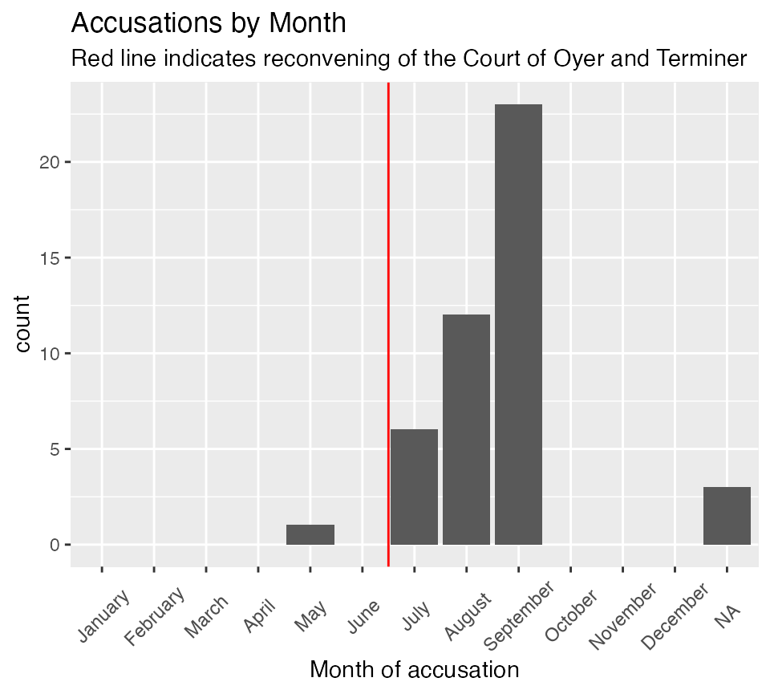
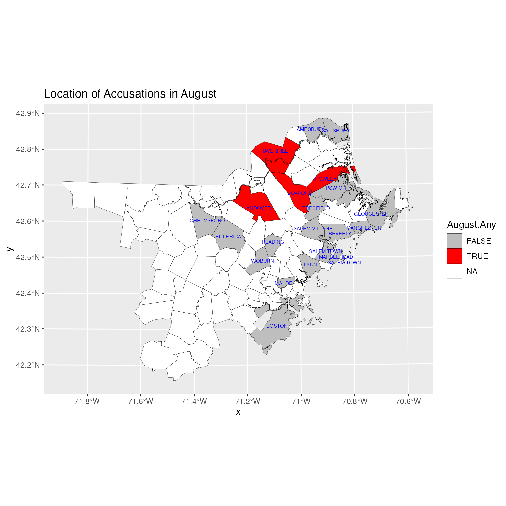
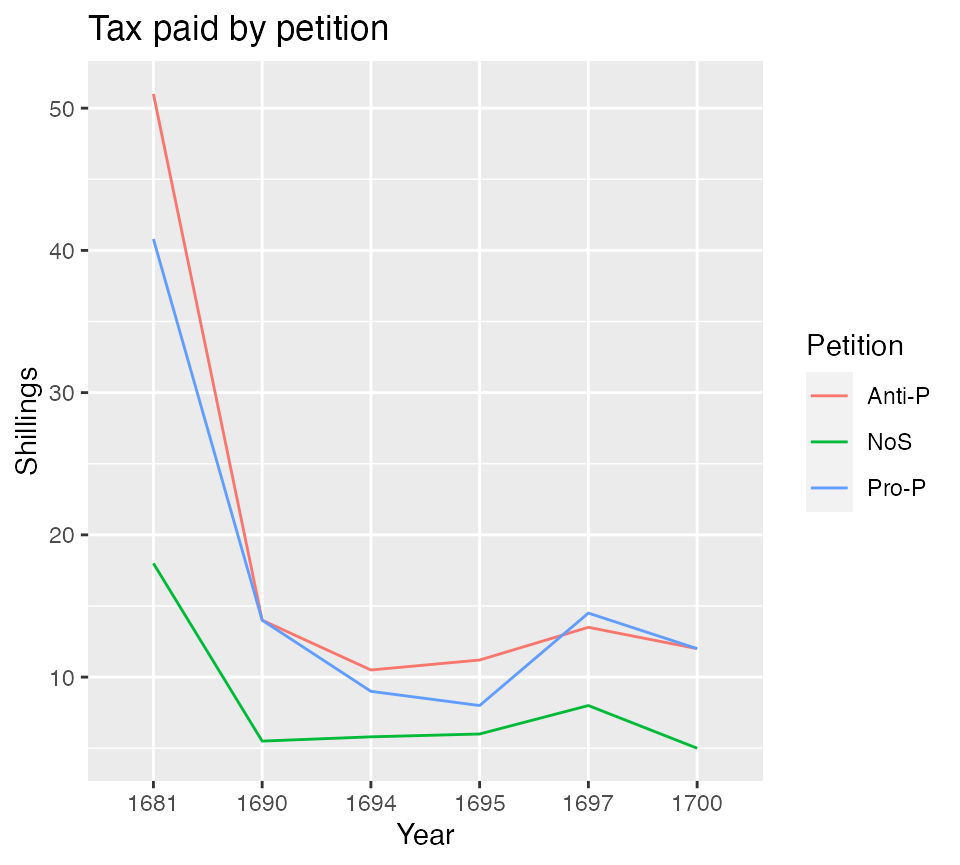
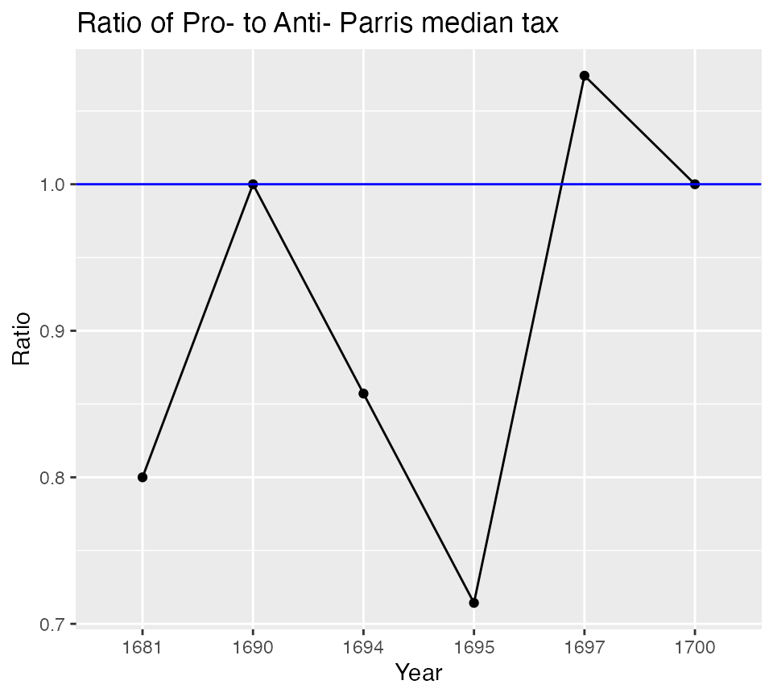
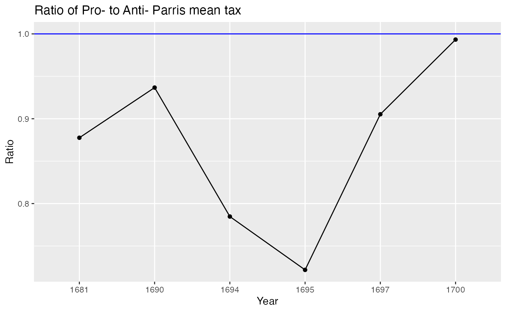

Reproducing the Website Analyses
2020-11-06
recreating_analyses.RmdThe Salem Witchcraft Website presents a number of data analyses and explains how to reproduce them using Excel. This vignette will document how to as closely as possible reproduce those analyses using R. In some cases the analyses will be extended in order to illustrate points in the website text that were not easily expressible in Excel.
While the website has seven data sets, the package has only 5. This is because R makes it relatively simple to manipulate the data and also because this organization is more in line with how social scientists would likely create a data set today.
As is always true in R, there are many different ways to do the same thing. If you are using this for teaching purposes you will likely want to use the approach that most closely matches what you are doing in your course and what your goals are for students to work on their own analyses. The focus of this document is on use of ggplot2 for graphing and in subsequent iterations will also illustrate use of the base R plotting system. There are some examples that use the tidyverse for analysis and some that use base R. However, even within these major groupings there are many ways to acheive the same goals. We have aimed to present ways to do this that are relatively accessible to people who have not used R extensively.
Many of the analyses presented are graphical and so that will be the focus here. However some preprocessing will also be illustrated.
This version does not yet include spatial analysis, but that is on the roadmap.
For the ggplots this theme is being used in may cases.
salem_theme <- theme(axis.text.x = element_text(angle = 45, vjust = .5))
Accusations and Executions
The website includes displays of the distribution by month.
Histogram and frequency table of accusations by month
ggplot(data = accused_witches) + aes(x = Month.of.Accusation.Name) + geom_bar() + labs(title = "Accusations by month", x = "Month") + scale_x_discrete(drop = FALSE) + salem_theme

table(accused_witches$Month.of.Accusation.Name, useNA = "ifany", dnn = "Month") %>% kable(caption = "Accusations by Month")
| Month | Freq |
|---|---|
| January | 0 |
| February | 3 |
| March | 4 |
| April | 22 |
| May | 39 |
| June | 3 |
| July | 12 |
| August | 23 |
| September | 33 |
| October | 1 |
| November | 3 |
| December | 0 |
| NA | 9 |
Cumulative accusations by month
ggplot(data = accused_witches) + aes(x = as.numeric(Month.of.Accusation.Name)) + stat_ecdf(na.rm = TRUE, geom = "line") + labs(title = "Cumulative accusations by month", x = "Month", y = "Cumulative Accusations") + scale_x_continuous(breaks = c(1:12), labels = c("Jan", "Feb", "Mar", "Apr", "May", "Jun", "Jul","Aug", "Sept", "Oct", "Nov", "Dec") )
| x | |
|---|---|
| January | 0 |
| February | 3 |
| March | 7 |
| April | 29 |
| May | 68 |
| June | 71 |
| July | 83 |
| August | 106 |
| September | 139 |
| October | 140 |
| November | 143 |
| December | 143 |
An alternative approach using dplyr that provides some other options. This approach would also let you add other variables to the new monthly data, whether the number of executions or other data you collect. One advantage of this approach is that it is easier to create a Pareto Histogram as displayed on the website. These examples show three possible ways to display the Pareto histogram. As usual there are other approaches.
monthly_accusations <- accused_witches %>% filter(!is.na(Month.of.Accusation)) %>% group_by(Month.of.Accusation.Name) %>% summarize(number = n()) %>% mutate(cumulative = cumsum(number) ) monthly_accusations %>% kable(caption = "Accusations by Month")
| Month.of.Accusation.Name | number | cumulative |
|---|---|---|
| February | 3 | 3 |
| March | 4 | 7 |
| April | 22 | 29 |
| May | 39 | 68 |
| June | 3 | 71 |
| July | 12 | 83 |
| August | 23 | 106 |
| September | 33 | 139 |
| October | 1 | 140 |
| November | 3 | 143 |
ggplot(data = monthly_accusations) + aes(x = Month.of.Accusation.Name, y = cumulative, group =1) + geom_col(aes(y = number)) + geom_line() + labs(title = "Frequency and Cumulative Frequency of Accusations by Month") + salem_theme
monthly_accusations %>% arrange(desc(number)) %>% mutate(Month.of.Accusation.Name = factor(Month.of.Accusation.Name, levels=Month.of.Accusation.Name)) %>% mutate(pareto_cumulative = cumsum(number) ) %>% ggplot() + aes(x = Month.of.Accusation.Name, y = number) + geom_col() + labs(title = "Pareto Histogram of Accusations by Month") + salem_theme
monthly_accusations %>% arrange(desc(number)) %>% mutate(Month.of.Accusation.Name = factor(Month.of.Accusation.Name, levels=Month.of.Accusation.Name)) %>% mutate(pareto_cumulative = cumsum(number) ) %>% ggplot() + aes(x = Month.of.Accusation.Name, y = pareto_cumulative) + geom_point( ) + geom_path(aes(y=pareto_cumulative, group=1), colour="blue", lty=3, size=0.9) + labs(title = "Pareto Cumulative Distribution of Accusations by Month") + salem_theme
monthly_accusations %>% arrange(desc(number)) %>% mutate(Month.of.Accusation.Name = factor(Month.of.Accusation.Name, levels = Month.of.Accusation.Name)) %>% mutate(pareto_cumulative = cumsum(number) ) %>% ggplot() + aes(x = Month.of.Accusation.Name, y = number) + geom_col() + geom_path(aes(y=pareto_cumulative, group = 1), colour = "blue", lty=3, size=0.9) + labs(title = "Pareto Histogram of Accusations by Month") + salem_theme

Executions
Creating the bar chart of executions over time is similar to creating that for accusations. Additionally, these are shown as what is termed scatterplots but now would be called line graphs.
Since most accused were not executed (and this is indicated by setting them to NA or missing) we’ll remove the missing cases from the graph.
ggplot(data = na.omit(accused_witches)) + aes(x = Month.of.Execution.Name) + geom_bar() + labs(title = "Executions by month", x = "Month") + scale_x_discrete(drop = FALSE) + salem_theme
table(accused_witches$Month.of.Execution.Name, useNA = "ifany", dnn = "Month") %>% kable(caption = "Executions by Month")
| Month | Freq |
|---|---|
| January | 0 |
| February | 0 |
| March | 0 |
| April | 0 |
| May | 0 |
| June | 1 |
| July | 5 |
| August | 5 |
| September | 9 |
| October | 0 |
| November | 0 |
| December | 0 |
| NA | 132 |
There are many ways to explore the relationship between executions and accusations. On the website this is displayed using overlapping line plots of the number of executions in a month and the number of accusations. If teaching, it is important to point out that the execuations in a month were not generally of the same people who were accused in that month. To reproduce this, one approach is to again use summarize() to create a monthly data set.
monthly_accused <- accused_witches %>% filter(!is.na(Month.of.Accusation)) %>% group_by(Month.of.Accusation.Name) %>% summarize(accusations = n()) %>% rename(Month = Month.of.Accusation.Name) monthly_executed <- accused_witches %>% filter(!is.na(Month.of.Execution)) %>% group_by(Month.of.Execution.Name) %>% summarize(executions = n()) %>% rename(Month = Month.of.Execution.Name) monthly_data <- left_join(monthly_accused, monthly_executed) %>% mutate(executions = ifelse(is.na(executions), 0, executions)) ggplot(monthly_data) + aes(x = Month, y = accusations, group = 1) + geom_path( color = "blue" ) + geom_line(aes(y = executions, x = Month, group = 1), color = "red") + labs(title = "Executions and Accusations by Month", subtitle = "Accusations in blue and executions in red") + salem_theme
Geographic Spread of Accusations
The pivot table of month of accusation by town. However that table is huge and only the first seven columns are shown on the website. A more compact display is given below rather than using kable(). Also note that the row and column totals are added.
addmargins(table( accused_witches$Month.of.Accusation.Name, accused_witches$Residence, dnn = c("Month", "Residence") )) #> Residence #> Month Amesbury Andover Beverly Billerica Boston Boxford Charlestown #> January 0 0 0 0 0 0 0 #> February 0 0 0 0 0 0 0 #> March 0 0 0 0 0 0 0 #> April 1 0 2 0 0 0 0 #> May 0 1 1 3 2 0 2 #> June 0 0 1 0 0 0 0 #> July 0 6 0 0 0 0 0 #> August 0 12 0 0 0 3 0 #> September 0 23 0 0 0 0 0 #> October 0 0 0 0 0 0 0 #> November 0 0 0 0 0 0 0 #> December 0 0 0 0 0 0 0 #> Sum 1 42 4 3 2 3 2 #> Residence #> Month Chelmsford Gloucester Haverhill Ipswich Lynn Malden Manchester #> January 0 0 0 0 0 0 0 #> February 0 0 0 0 0 0 0 #> March 0 0 0 1 0 0 0 #> April 0 0 0 0 0 0 0 #> May 0 0 0 2 3 1 0 #> June 0 0 0 0 1 0 0 #> July 0 0 3 0 0 0 0 #> August 0 0 3 0 0 0 0 #> September 0 3 0 0 0 0 1 #> October 0 0 0 0 1 0 0 #> November 0 3 0 0 0 0 0 #> December 0 0 0 0 0 0 0 #> Sum 0 6 6 3 5 1 1 #> Residence #> Month Marblehead Piscataqua, Maine Reading Rowley Salem Town #> January 0 0 0 0 0 #> February 0 0 0 0 0 #> March 0 0 0 0 1 #> April 0 0 1 0 7 #> May 1 0 3 0 11 #> June 0 0 0 0 1 #> July 0 0 0 0 2 #> August 0 0 0 5 0 #> September 0 1 3 0 2 #> October 0 0 0 0 0 #> November 0 0 0 0 0 #> December 0 0 0 0 0 #> Sum 1 1 7 5 24 #> Residence #> Month Salem Village Salisbury Topsfield Wells, Maine Woburn Sum #> January 0 0 0 0 0 0 #> February 3 0 0 0 0 3 #> March 2 0 0 0 0 4 #> April 4 0 6 1 0 22 #> May 6 0 0 0 3 39 #> June 0 0 0 0 0 3 #> July 0 1 0 0 0 12 #> August 0 0 0 0 0 23 #> September 0 0 0 0 0 33 #> October 0 0 0 0 0 1 #> November 0 0 0 0 0 3 #> December 0 0 0 0 0 0 #> Sum 15 1 6 1 3 143
The site discusses the “grand total” data (the row sum) as reflecting the varying intensity in the different towns. This can also be shown using a univariate table (or dplyr::summarize())
table(accused_witches$Residence, dnn = "Residence") %>% kable(caption = "Residences of Accused")
| Residence | Freq |
|---|---|
| Amesbury | 1 |
| Andover | 45 |
| Beverly | 4 |
| Billerica | 3 |
| Boston | 2 |
| Boxford | 3 |
| Charlestown | 2 |
| Chelmsford | 1 |
| Gloucester | 9 |
| Haverhill | 6 |
| Ipswich | 4 |
| Lynn | 5 |
| Malden | 1 |
| Manchester | 1 |
| Marblehead | 1 |
| Piscataqua, Maine | 2 |
| Reading | 7 |
| Rowley | 5 |
| Salem Town | 24 |
| Salem Village | 15 |
| Salisbury | 1 |
| Topsfield | 6 |
| Wells, Maine | 1 |
| Woburn | 3 |
accused_witches %>% group_by(Residence) %>% summarize(number = n()) %>% kable(caption = "Residences of Accused")
| Residence | number |
|---|---|
| Amesbury | 1 |
| Andover | 45 |
| Beverly | 4 |
| Billerica | 3 |
| Boston | 2 |
| Boxford | 3 |
| Charlestown | 2 |
| Chelmsford | 1 |
| Gloucester | 9 |
| Haverhill | 6 |
| Ipswich | 4 |
| Lynn | 5 |
| Malden | 1 |
| Manchester | 1 |
| Marblehead | 1 |
| Piscataqua, Maine | 2 |
| Reading | 7 |
| Rowley | 5 |
| Salem Town | 24 |
| Salem Village | 15 |
| Salisbury | 1 |
| Topsfield | 6 |
| Wells, Maine | 1 |
| Woburn | 3 |
The website contains a towns data set that essentially reproduces the large contingency table. This makes sense to do in Excel, but in R we do not need to makea separate data set.
To make a histogram for each town we can select the town we want. This is illustrated below for Andover.
Note that in the data set the white space from the beginning and ending of the place names has been removed.
accused_witches %>% filter(Residence == "Andover") %>% ggplot() + aes(x = Month.of.Accusation.Name) + geom_bar() + scale_x_discrete(drop=FALSE) + salem_theme

The website encourages examining the period before and after the convening of the Court of Oyer and Terminer in June.
To help make this more visible we can add a vline.
accused_witches %>% filter(Residence == "Andover") %>% ggplot() + aes(x = Month.of.Accusation.Name) + geom_bar() + geom_vline(xintercept = 6.5, color = "red") + scale_x_discrete(drop = FALSE) + labs(title = "Accusations by Month", subtitle = "Red line indicates reconvening of the Court of Oyer and Terminer", x = "Month of accusation") + salem_theme

Alternatively, we can use faceting to show all of the histograms.
accused_witches %>% ggplot() + aes(x = Month.of.Accusation.Name) + geom_bar() + geom_vline(xintercept = 6.5, color = "red") + scale_x_discrete(drop = FALSE) + facet_wrap(facets = vars(Residence), ncol = 4) + labs(title = "Number of accusations by month", subtitle = "Red line indicates reconvening of the Court of Oyer and Terminer", x = "Month of Accusation") + theme(axis.text.x = element_text(angle = 90, vjust = .5))
Maps
We can use maps to represent the geographic distribution over time spatially. The salem_region data set is an sf (simple features) data set that provides geographic data for the towns in the three Massachuessets counties represented in our data: Essex, Middlesex and Sussex.
To use this data you will need to install the sf package. The code at the start of the second code chunk tests for whether you have done this.
Not all of the towns in these three counties had accusations: the majority did not. The data also include the total accused for each town and the monthly accused for the towns that ever had an accusation. However, these variables should never be used outside of maps because the results will be incorrect. This is because many towns have multiple records. This is especially true if they include islands, which is common in this region of the state. These are based on modern municipal boundaries which are close to but not the same as the historical ones. There are many geographic analyses that can be done. Below a comparison of the distribution of whether towns had at least on accusation in each of four months is given.
First, create variables indicating whether towns did or did not have an accusation in a month and remove the TOWN_LABELs for all the towns that never had an accusation.
newdata <- salem_region %>% mutate(February.Any = February > 0, March.Any = March > 0, April.Any = April > 0, May.Any = May > 0, June.Any = June > 0, July.Any = July > 0, August.Any = August > 0, September.Any = September >0, October.Any = October > 0, November.Any = November > 0) newdata$TOWN_LABEL <- ifelse(newdata$n_accused == 0, NA, newdata$TOWN_LABEL)
if (requireNamespace("sf", quietly = TRUE)) { p1 <- ggplot(newdata) p2 <- geom_sf_text(aes(label = TOWN_LABEL), color = "blue", size = 2, nudge_x = 5, nudge_y = 5, na.rm = TRUE) p3 <- scale_fill_manual(values = c( "grey", "red"), na.value = "white") } if (requireNamespace("sf", quietly = TRUE)) { p1 + geom_sf(data = newdata, aes(fill = February.Any), color = "black", size = .1) + p3 + p2 + labs(title = "Location of Accusations in February") }

if (requireNamespace("sf", quietly = TRUE)) { p1 + geom_sf(data = newdata, aes(fill = July.Any), color = "black", size = .1) + p3 + p2 + labs(title = "Location of Accusations in July") }

if (requireNamespace("sf", quietly = TRUE)) { p1 + geom_sf(data = newdata, aes(fill = August.Any), color = "black", size = .1) + p3 + p2 + labs(title = "Location of Accusations in August") }

if (requireNamespace("sf", quietly = TRUE)) { p1 + geom_sf(data = newdata, aes(fill = November.Any), color = "black", size = .1) + p3 + p2 + labs(title = "Location of Accusations in November") }

Conclusion
This has illustrated how to reproduce the analyses from the Salem Witchcraft Website. The raw data is available at the websie and at the respository for this package. The code used to transform the original data into the files presented here is also available at that location.
Social Conflict
The website explores a variety of dimensions of social conflict in the Salem region. One of the important social cleavages was between those who did or did not support Reverend Parris, who had been appointed as the minister for the new church in Salem Village. (This was the Puritan church, which was the official church in Massacheusetts.)
The site has two data sets, one of pro-Parris individuals and one of anti-Parris individuals. For use in R these have been combined with an added variable identifying the position of the indivual. This data set is called parris_social. Also the original column label for the anti-Parris data was “[Church] Member” while for the pro-Parris data it was “Church-Member.” In the parris_social data Church-Member is used. Using the variable
viewit can be subset to pro- and anti- groups. However it is not necessary to do this.A three-way table can be created, as one example. Two ways of doing this are shown. Marginals and proportions could be added.
Treating position on Parris as the dependent varable, we might rearrange the tables.
The parris_social data set focuses on those who signed pro- and anti-Parris petitions. In contrast, the salem_village data set includes individuals who did not sign petitions in addition to those who did. However, it is limited to those who paid taxes so many of the young men and women of all ages who are in the parris_social data are not included. This also includes data from multiple years.
The basic table for this is the analysis of church membership and position on Parris.
Political Power
As explained on the website, the Village of Salem was governed by a Committee of Five in addition to the Town Meeting see Salem Village Politics.
The data set that is part of this package called committee_list is structured differently than the original data. It is in “long” format with one row per person-year for each committee member for the years they served. This can be coverted to various other formats if desired.
You can make a table see how the make up of the committee changed over the period from 1687 to 1698.
The website shows a complex pivot table involving three variables.
One way to explore the association is to cross tabulate the Petition and Social variables. However, this counts the same people multiple times if they served for multiple years.
To adjust for this and get the data matching the website we need to remove those duplicates. Then the table matches that found at Committee Social Report.
Wealth and Salem Village Conflict
The tax_comparison data set is also set up in long format. This can then be used to create a comparison table similar to the table on Tax Comparison. One limitation is that R does not have a built in function for the mode.
This is the most complex analysis on the website. Complications include people moving in and out of the data in different years (individuals appear between one and six times), the changing amount of taxes over the time period and name changes. The analysis looks at both group and individual level comparisons and individual level mobility.
Here is the distribution of tax payers by year.
The next table summarizes descriptive statistics for all of the years. The website general shows one year at a time or in some cases compares two years. You can add
filter(Year = 1681)to display only the 1681 data, changing the filter to select whatever years you want. For example to select all of the data for 1681 through 1694 one way would be to addselect(Year >= 1691 & Year <= 1694).Let’s start by looking at the group level data.
The first table is for everyone in a year. The second separates the data based on which petition the tax payer signed (or if they) did not sign.
To do the analysis comparing the median tax paid for the three groups we can graph the values over time. In this case, we will first make a data set of statistics to work with.

The analysis of annual data on the website specifically focuses on thse who were Pro- and Anti- Parris based on petition signatures. As can be seen in the previous graph, those who did not sign petititions always had a lower median tax, but the other two groups were inconsistent. To address this the site presents the ratio of the medians of the two group. A ratio of 1.0 means that the median tax for the two groups was identical. A ratio of great than 1 means that the Pro-Parris group had a higher median. A ratio of less than one means that the Anti-Parris group had a higher median.

The same analysis can be done but substituting mean for median.

The site also looks at individual trajectories using ranks and percentiles within each year, allowing analysis of whether an individual’s financial position changed substantially over time. Individuals whose percentile changed by more than 10 are considered to have moved substantially.
There are many ways to do this, and the method chosen will depend on your purposes. The example below is not necessarily the best or most efficient. To do the analysis we need to obtain the rank and percentile for each of the tax amounts within the years. Finally, we need to compare those. In this example we will focus on the 1681-1690 comparison shown while providing a framework for the others.
First create a wide data set and calculate ranks and cumulative proportions. This allows viewing and sorting of individuals for specific years.
Next we want to compare our two selected years and determine the number who went up, down and stayed the same and how that relates to the petitions. This analysis is based on the empirical cumulative relative frequency.
To reproduce the analysis on the website we use the dplyr min_rank function (which is equivalent to rank(ties.method = “min”) in base R). This ranks all of the tax payments with gaps between the ties. So if two people are tied for the second rank, the person after them would be ranked fourth. Turn the rank into a percentile by subtracting 1 and dividing by the number of tax payers in that year.